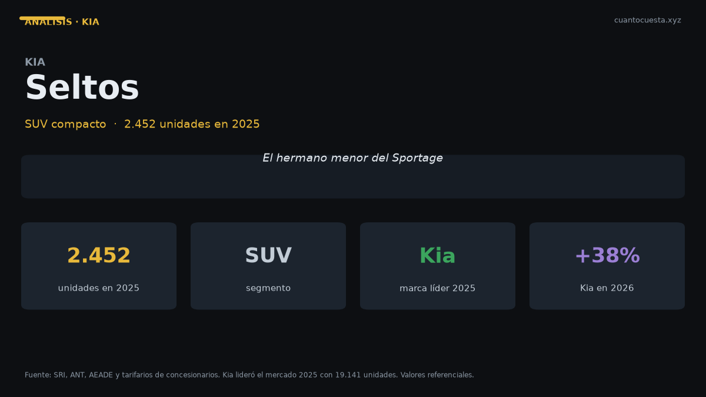

Kia Seltos en Ecuador: análisis completo, costos y veredicto
Vendió 2.452 unidades en 2025 en Ecuador. Qué se sabe de su precio, cuánto cuesta operarlo al año y cómo se ubica entre el Sonet y el Sportage.

El Kia Seltos vendió 2.452 unidades en 2025, apenas 60 menos que el Sportage y 1.141 menos que el Sonet. Ese número lo ubica exactamente donde está: es el escalón intermedio de Kia en Ecuador, un SUV compacto para quien necesita más espacio que un subcompacto sin llegar al precio de un mediano.
Como con el resto de la gama alta de Kia en el país, el precio no está publicado en las fuentes que consultamos. No vamos a inventarlo. Lo que sí podemos entregar es el costo de operación del segmento, el mapa de precios alrededor y los datos de volumen que sí son verificables.
El Seltos vendió 2.452 unidades frente a las 2.512 del Sportage: 60 unidades de diferencia en todo el año. Son, en la práctica, el mismo nivel de aceptación en el mercado. La elección entre los dos no se decide por volumen, se decide por precio cotizado.
Ficha técnica
| Dato | Kia Seltos |
|---|---|
| Segmento | SUV compacto |
| Motor | No especificado públicamente |
| Potencia | No especificado públicamente |
| Torque | No especificado públicamente |
| Transmisión | No especificado (varía por versión) |
| Consumo homologado | No publicado en las fuentes consultadas |
| Dimensiones | No especificadas públicamente |
| Maletero | No especificado |
| Garantía | Confirmar cobertura de la versión (Kia Ecuador ofrece 10 años o 160.000 km en varios modelos) |
| Precio | No especificado públicamente |
De nuevo: los datos que no existen, no se inventan. Pide por escrito en la agencia motor y cilindrada, potencia, torque, consumo homologado, airbags y cobertura de garantía.
Lo que sí es verificable es su posición en la gama: por debajo del Sportage en tamaño y por encima del Sonet. Y comparte marca con modelos que ofrecen garantía de 10 años o 160.000 km, la cobertura más larga del mercado ecuatoriano.
Precio y versiones en Ecuador
| Modelo | Precio | Unidades vendidas 2025 |
|---|---|---|
| Kia Sonet (escalón abajo) | $21.599 – ~$25.000 | 3.593 |
| Kia Seltos | No especificado públicamente | 2.452 |
| Hyundai Tucson (referencia del mediano) | $32.499 – ~$40.000 | 2.395 |
| Kia Sportage | No especificado públicamente | 2.512 |
El mapa es útil: el Sonet cierra cerca de $25.000 y el Tucson arranca en $32.499. Un SUV compacto intermedio se mueve, por razonamiento de gama, en la franja de $26.000 a $30.000 — pero eso es estimación declarada, no precio publicado del Seltos. Cotiza al menos en tres concesionarios: en este rango, la diferencia entre agencias por la misma versión fácilmente llega a cuatro cifras.
Cuánto cuesta mantenerlo
Escenario: 12.000 km al año, valor de referencia $28.000 (estimación del segmento), combustible Extra o Ecopaís a $3,26 el galón y una estimación declarada de 13 km/l mixto para un SUV compacto. El consumo del Seltos no está publicado.
| Rubro anual | Rango estimado |
|---|---|
| Combustible (estimación 13 km/l) | ~$795 |
| Mantenimiento (aceite, filtros, alineación) | $400 – $600 |
| Matrícula (IPVM progresivo sobre avalúo) | $220 – $400 |
| Seguro (≈4% del valor) | $1.040 – $1.200 |
| Llantas (juego cada ~40.000 km) | $150 – $250 |
| Otros (lavado, imprevistos, multas) | $100 – $200 |
| Total anual | $2.705 – $3.445 |
| Equivalente mensual | $225 – $287 |
El Seltos se ubica entre dos aguas: cuesta más al año que un Sonet (entre $2.267 y $2.813) y menos que un SUV mediano (entre $3.299 y $4.049). Es exactamente lo que se espera de un escalón intermedio.
Dos advertencias sobre este cuadro:
Octanaje. Si tu versión exige Súper a $5,61 el galón en lugar de Extra a $3,26, el combustible sube de ~$795 a cerca de $1.370 al año. Son más de $570 anuales por una decisión que se toma al leer el manual, no al negociar el precio.
Matrícula. El IPVM del SRI es progresivo, del 0,5% al 6% sobre el avalúo, y el avalúo se deprecia alrededor del 20% anual con piso del 10% del PVP. En este rango de valor, la matrícula supera el promedio de ~$180 anual que se cita para autos populares.
Precios de taller para comparar: aceite y filtro $50–$90, alineación y balanceo $30–$50, filtro de aire $20–$40, filtro de combustible $30–$60, bujías $50–$100, pastillas delanteras $80–$150, amortiguadores $200–$350, batería $100–$200, llanta $120–$250.
El costo de mantenimiento anual varía más por marca que por tamaño: entre $300 y $500 en Nissan, $300 y $600 en Toyota, y $500 y $700 en Mazda. Al cotizar cualquier SUV, pide el tarifario de los primeros 50.000 km antes de firmar.
Equipamiento y seguridad
No hay ficha por versión disponible, así que no construimos listas especulativas. Tres puntos que sí puedes verificar en la agencia y que definen si este SUV vale lo que cuesta:
Airbags. En el segmento, lo mínimo aceptable hoy son 6 de serie. Pide el número exacto por versión, no el de la versión tope.
Control de estabilidad. Indispensable en Quito, Cuenca o Loja, donde manejas en pendiente constante. Confirma que esté de serie y no solo en la versión alta.
Garantía. Kia Ecuador ofrece 10 años o 160.000 km en varios modelos. Confirma si esa cobertura aplica a tu versión de Seltos y si tiene exclusiones por kilometraje anual.
Para quién es y para quién no
Es para ti si:
- Necesitas más espacio que un subcompacto, sin llegar al precio de un mediano
- Quieres respaldo de marca Kia y su red de posventa
- Valoras garantía larga y manejo en pendiente con control de estabilidad
- Puedes asumir entre $225 y $287 al mes de operación
No es para ti si:
- Tu presupuesto tope es $25.000: el Sonet es ese carro
- Necesitas maletero máximo por dólar: un sedán de $15.799 ofrece 475 litros
- Entras a lastre con frecuencia: aquí conviene mirar camioneta
- No vas a cotizar en varias agencias: el precio no está publicado y la variación entre concesionarios pesa
Comparación con su rival directo
| Modelo | Precio | Unidades 2025 | Dato clave |
|---|---|---|---|
| Kia Seltos | No especificado públicamente | 2.452 | Escalón intermedio de Kia |
| Chevrolet Groove | $19.999 – $24.490 | 4.063 | El SUV más vendido del país, 4 airbags |
| Kia Sonet | $21.599 – ~$25.000 | 3.593 | 6 airbags de serie, hasta 18 km/l, hecho en Quito |
El rival de precio más cercano por abajo es el Groove, el SUV más vendido de Ecuador con 4.063 unidades, que entra desde $19.999 con 4 airbags. Y el Sonet, con 6 airbags de serie y un consumo combinado de hasta 18,03 km/l, cuesta menos y se ensambla en Quito.
El Seltos solo gana a esos dos si tu criterio es tamaño y espacio interior. Si el criterio es precio, consumo o seguridad pasiva por dólar, el veredicto cambia.
Veredicto
El Kia Seltos es la opción correcta cuando el Sonet te queda chico y el Sportage te queda caro. Con 2.452 unidades en 2025 y una diferencia de solo 60 unidades frente al Sportage, es un modelo plenamente aceptado por el mercado ecuatoriano.
Su talón de Aquiles es la información: precio y especificaciones no están publicados. Eso obliga a cotizar en persona y a confirmar por escrito airbags, control de estabilidad, octanaje requerido y cobertura de garantía. Es una molestia comercial, no un defecto del vehículo.
Si haces la tarea de cotizar y los números cierran entre $225 y $287 al mes de operación, es una compra razonable. Si no tienes tiempo para esa tarea, compra el Sonet: precio y garantía están publicados y no dependes del discurso de un vendedor.
Precios referenciales de lista a septiembre de 2026. El precio y las especificaciones del Kia Seltos no están publicados en las fuentes consultadas; los valores de costo son estimaciones declaradas. Varían por agencia, versión y promoción. No constituye asesoría financiera.
Sigue leyendo
Chery Arrizo en Ecuador: análisis completo, costos y veredicto
Vendió 1.534 unidades en 2025 y Chery creció 50,1% en el primer semestre de 2026. Precio, repue
Chevrolet D-Max en Ecuador: análisis completo, costos y veredicto
Es la camioneta más vendida de Ecuador con 5.515 unidades en 2025. Precio, costo real de operac
Chevrolet Groove en Ecuador: análisis completo, costos y veredicto
El SUV más vendido de Ecuador: 4.063 unidades en 2025. Precio desde $19.999, cuota de $309 al m
GWM Poer en Ecuador: análisis completo, costos y veredicto
La camioneta ensamblada en Ambato que rompió el precio del 4x4: 4.092 unidades en 2025. Precio,
Hyundai Grand i10 en Ecuador: análisis completo, costos y veredicto
Segundo auto de pasajeros más vendido de Ecuador con 1.690 unidades en 2025. Precio desde $13.9
Cómo usamos estos datos
Las cifras de esta guía provienen de fuentes públicas oficiales y tarifarios de concesionarios publicados. Los valores son referenciales: tasas municipales, promociones y precios de repuestos varían. Verifica siempre en la entidad o concesionario antes de decidir.